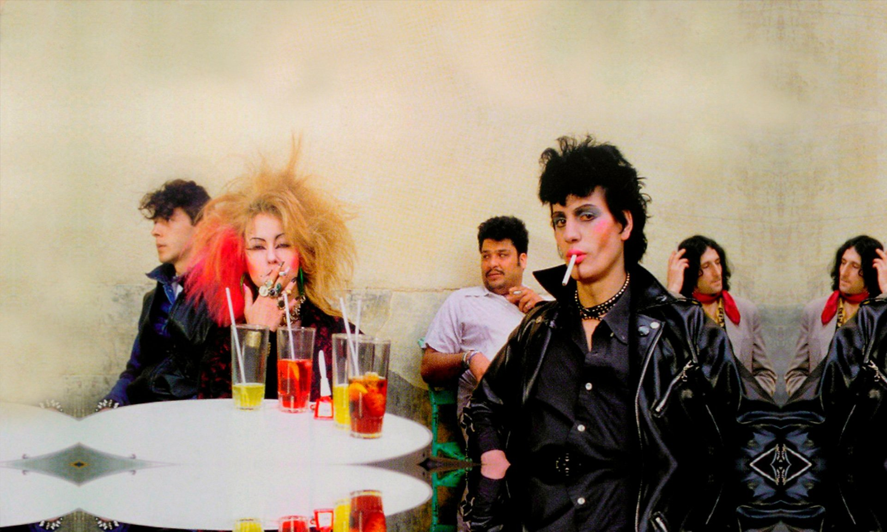

El blog de Kinkilleromedieval
La década de los ochenta fue una época económicamente difícil para España. Tras sufrir los efectos de la crisis del petróleo de 1973, se hacía necesaria una reestructuración y modernización de la industria española. Estamos hablando de la denominada “reconversión industrial”, la cual conllevaba reestructuraciones y recortes de la plantilla.
Además, también había problemas sociales como el auge de la heroína, que afectó a las regiones con más desarrollo industrial: Madrid, Cataluña y el País Vasco. Esta última región fue la más afectada debido a que era la comunidad autónoma con más industria pesada, que era el principal objetivo de la reconversión, que acabó prácticamente con todo el sector sin ofrecer alternativas.
También habría que mencionar el contexto político, que estuvo marcado por el gobierno del PSOE y sus políticas de reformas a nivel sociocultural , por la lucha antiterrorista (en la que las fuerzas de seguridad mejoraron en medios y eficacia), donde el Estado de Derecho estaba incipiente y como consecuencia, las acciones terroristas de ETA se endurecieron con la llegada del régimen democrático.
El Rock Radikal Vasco, también conocido como "Rock Radical Vasco", fue un movimiento musical surgido en Euskal Herria (País Vasco) a mediados de los años 80 y que terminaría al comienzo de la siguiente década. Musicalmente, era una denominación heterogénea, que englobaba a grupos de diferentes estilos musicales como: el punk, el rock urbano, el heavy metal, el ska o el reggae; pero principalmente, a aquellos con una especial influencia de los primeros grupos de punk (Sex Pistols, Ramones, The Clash, etc.).
La etiqueta de Rock Radical Vasco (RRV) surge en 1983 de la mano de José Mari Blanco (ex mánager de La Polla Records) y Marino Goñi (fundador de las compañías discográficas Soñua y Oihuka), y fue acuñada tras un festival contra la adhesión de España a la OTAN celebrado en Tudela (Navarra). Algunos grupos rechazaron la designación por considerarla comercial y otros por incluir la palabra «vasco», reivindicándose como apátridas (es el caso del grupo Eskorbuto).
Surge porque a principios de los 80, el País Vasco, estaba azotado por varias circunstancias como: la crisis económica en la región por la “reconversión industrial”, que desestructuró la sociedad vasca, generando altos niveles de desempleo y pérdida de poder adquisitivo de la población agravada por el incremento de la natalidad; la marginalidad aumentó (especialmente en los suburbios de las zonas industriales) y con ella, el consumo de drogas de gran mortalidad como la heroína (como consecuencia se extendió el VIH).
Además de la transición política, se ralentizó en comparación con otras zonas, debido en parte a la dispersión política de la izquierda nacionalista vasca. Además, de la creación de un plan del Ministerio del Interior de España, dirigido por José Barrionuevo del Partido Socialista Obrero Español, que diseñó el plan ZEN (Zona Especial Norte) en 1983 con el objetivo de enfrentarse a ETA y frenar la situación insurreccional o conflictividad social que a principios de la década de 1980 se vivía en el País Vasco y en Navarra.
Finalmente, tenemos una sociedad desamparada, desolada y sin esperanzas, dando lugar a un estilo metamusical, es decir, que no es solo la música o el baile, sino que va a más allá, desarrolla un estilo de vida (al igual que el ska, reggae, etc.) y se tenderá al rechazo de la música de los cantautores de la década anterior, ya que era una música un tanto burguesa porque era más que reivindicativa, nostálgica.
El pensamiento del Rock Radical Vasco (RRV) es el que surge por el punk, ska, reggae… ¿pero en qué se basa exactamente? Su ideología o filosofía era antisistema, con una crítica continua a estamentos como el Estado, la Policía, la Monarquía, la Iglesia, el Ejército, etc. Razón por la que grupos, que vendían cientos de miles de discos, fueron totalmente ignorados por la mayor parte de los medios de comunicación.
También en la propia filosofía o ideología de rebeldía de estos grupos, se puede ver como sus letras están marcadas por los acontecimientos que hemos hablado antes. Diversos medios destacaron la relación entre la izquierda abertzale y el RRV. Aunque es curioso, porque la izquierda abertzale en un principio, criticaba con dureza el RRV porque venía de fuera y por lo tanto era imperialista, hasta que vieron que tenía éxito en los jóvenes y decidieron participar , mediante la financiación a grupos que coincidían más o menos con su ideología (ej. Kortatu). Sin embargo, algunos de estos grupos renunciaban a toda clase de nacionalismos o patrias, como es el caso de Eskorbuto, que renegaron de España, del País Vasco y de todo, metiéndose así en problemas.
En 1975, España comenzaba la “Transición” tras la muerte de Franco. Durante este periodo llamado “Transición”, surgirá de manera espontánea en Madrid un movimiento artístico y contracultural, que no tardó mucho en adoptar el nombre de la “Movida Madrileña”. Esto se dio lugar en barrios que se podrían calificar como “bohemios”, un ejemplo de ello es Malasaña, donde en los 80 era un hervidero cultural. Este barrio madrileño, localizado al norte de Gran Vía, se convirtió en el centro neuronal del movimiento.
Este movimiento tan peculiar estaba caracterizado por ser una nueva forma de expresión, tanto verbal como estéticamente y por su carácter innovador.
Este movimiento tuvo su inicio en 1977-1978, cuando la cultura underground empezó a influenciar a España. Sin embargo, no se llega a popularizar hasta 1980, momento en el que se conmemoraba la muerte de Canito (cantante de Tos) que murió por un accidente de tráfico en 1979. Aquel concierto, que se celebró en el salón de actos de la Escuela de Caminos de la Universidad Politécnica de Madrid, supuso un antes y un después para la Movida Madrileña, pues se dieron a conocer grandes artistas musicales de la época como: Nacha Pop, Alaska y los Pegamoides, Paraíso, Mamá, Los Bólidos, los Trastos, Mario Tenia y Los Solitarios y Mermelada.
Estaba marcado por el hedonismo, ya que lo que les unía eran las ganas de divertirse en la capital. Madrid, era el protagonista urbano, marco y escenario de la diversión juvenil, fue una de las características más peculiares para entender el hecho cultural que significó ‘La Movida Madrileña’. Además de que la ola de energía creadora, liberada por los cientos de jóvenes que se lanzaban a vivir Madrid, y sus noches, eran las 2 caras de una misma moneda: La del mercantilismo y hedonismo apolítico, por un lado, y la de la ruptura con todo el engranaje cultural de represión que significaron los 40 años de la dictadura franquista, por el otro…
También destacaban las ansias de disfrute de una juventud, deseosa de poner en pie y usar de pleno su libertad individual y de disfrutar de forma colectiva de ella. Como consecuencia de lo comentado anteriormente, a la Movida Madrileña se la podría clasificar como un movimiento “burgués”, comparado con otros movimientos musicales que tienen un compromiso social. Pues está marcado por el individualismo, el hedonismo y el rechazo a la reivindicación socio-política como consecuencia de la bonanza económica en la capital y la obsolescencia de los cantautores, que era una música muy nostálgica para esas generaciones “rebeldes”. Estas se vieron influidas por el progresismo de Enrique Tierno Galván (alcalde del PSOE) mediante sus subvenciones culturales para los jóvenes. Por último, me gustaría añadir otro aspecto de lo que es “La Movida” y es que podría clasificarse como un movimiento “intelectual” porque es el origen de famosos como Almodóvar o Agatha Ruiz de la Prada.